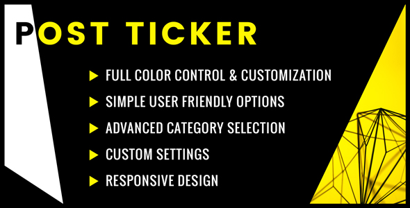

WP Post Ticker

Quick Start Guide
== Installation ==
Make sure you have a .zip file of wp-post-ticker downloaded from your purcahse.
Via WordPress Admin Area (Recommended)
1. Log into your WordPress website and locate Plugins > Add New > Upload Plugin.
2. Click "Choose File" and select the .zip folder of wp-post-ticker from your computer.
3. Click "Install Now" and once it finishes make sure to press "Activate Plugin" to activate WP Post Ticker.
Via FTP (File Transfer Protocol)
1. Unzip or extract wp-post-ticker from the downloaded .zip file.
2. Upload 'wp-post-ticker' folder to the '/wp-content/plugins/' directory.
3. Activate the plugin through the 'Plugins' menu in WordPress.
== Quick Set Up ==
1. While logged into the /wp-admin/ of your WordPress website, click on "Post Ticker" located in the left sidebar of your admin area.
2. Click "Add New Post Ticker" located towards the top of the page.
3. Give your new post ticker a title and select which categories you would like the ticker to slide through. Don't worry about the other settings for now.
4. Click "Publish" towards the top right of the page to save it.
5. Now you will find a shortcode on the right hand side of the settings. Copy that shortcode into any page or post, or locate the "WP Post Ticker" in the widget area (Appearance > Widgets).
6. Make sure to view the default styles of WP Post Ticker on the front end of your website. If you need to make any kind of customization, go back to Post Ticker > All Post Tickers and select the one you want to edit. You will see many customization options.
For further explanation of all the settings, please go to Post Ticker > Instructions or keep reading below.
Explanation of Settings
Category Selection: This is where you select which post categories will be displayed on your ticker. If a category is checked, it will be displayed. If unchecked, it will not be displayed.
Limted to 1 selection in the free version. Upgrade to Pro Version for unlimited category selections.
Post Display: Choose how many posts to show at a time as well as the total amount of posts you want to load into the ticker.
- How many posts do you want to display at a time? - Controls the number of posts that are displayed at a single time.
- How many posts do you want to load? - Sets the total amount of posts you load into a single ticker.
- Hide Password Protected Posts? - Hides or shows password protected posts from showing on your ticker. Pro Version Only
Sorting Order: Choose the order your posts are displayed on your ticker.
Thumbnail Options: Controls how the featured image attached to the post shows.
- Display Post Thumbnail - Hide or show the featured image on each post.
- Thumbnail Position - Choose the position of the featured image.
- Post Thumbnail Width in Px - Controls the size of the thumbnail image.
- Post Thumbnail width to height ratio - Controls the ratio of the thumbnail image. For example 1:1 ratio is a square, 1:2 ratio is rectangular.
Scroll Options: Choose the way your ticker slides through the posts.
- Manual - one by one. Disables auto scrolling. The user can still scroll through the posts on the front end with the navigation icons.
- Manual - shift all posts in view. Disables auto scrolling. When the user clicks the up or down arrow icon, the ticker will shift the amount of posts you decide to display. For example if you chose to display 3 posts at a time, the ticker will slide through 3 posts with one click.
- Auto - one by one. Enables auto scrolling. Ticker will scroll through a single post at a time.
- Auto - shift all posts in view. Enables auto scrolling. Ticker will rotate through a whole set of posts for each scroll. For example if you choose to display 3 posts at a time, it will replace all 3 posts for every scroll.
- Scroll Speed - This determines the scrolling/rotate speed in milliseconds. Pro Version required to modify this value.
- Scroll Direction - Choose whether your ticker scrolls up or down.
Animation Easing Options: Choose your favorite style of sliding animation and its transition speed.
Author Selection: Choose to show or hide posts depending on the author of the post.
Post Meta Options: You can choose to display up to two post meta options. Post meta options include Author, Post Date, Last Modified Date, Category, Rating.
Width Options: Controls the width of the ticker container. You can use pixels or percentages to control the width.
Explanation of Styles
Override Global Options: Selecting this option will override all individual style settings and apply the global style settings. Pro Version Only
Ticker Container Options: Customize the background color and border styles for the ticker container.
- Background: Change the whole ticker container background color, or choose to have no background color at all.
- Borders: Change the outside borders of the ticker container individually. Choose the width, style and color of each individual border!
Title Options: Control the padding, bottom border, color, font size alignment and line height of the post ticker title.
- Title Alignment: Choose to align your WP Post Ticker title to the left, center or right.
- Title Padding: Individually choose the padding for the left, right, top and bottom of the title.
- Title Border Bottom: This is the line that is directly below the title. You can customize the width, style and color of this line.
- Title Colors: Simply change the font color and background color of your WP Post Ticker Title.
- Title Font Size: Increase or decrease the font size and line height of your WP Post Ticker Title
Navigation Options: Customize the styles of the navigation section, including the icons.
- Navigation Container: Choose to show or hide the front end post navigation arrows and align them to the left, right or center. Also customize the width, style and color of the border bottom, which is the line below the controls.
- Navigation Icons: Space out the navigation icons with custom padding on the left, right, top and bottom. Also choose the font size and color of the navigation icons.
Post Section Options: Customize the styles of the post container, post title and post meta options.
- Post Container: Choose the width, style and color of the line that divides each individual post. Also customize the padding for the left, right, top and bottom to increase or decrease the amount of space on the edges. of each post inside your WP Post Ticker.
- Post Title Options: Simply choose the font size and color of your post titles.
- Post Meta 1 Options: Simply choose the font size and color of your first post meta option.
- Post Meta 2 Options: Simply choose the font size and color of your second post meta option.